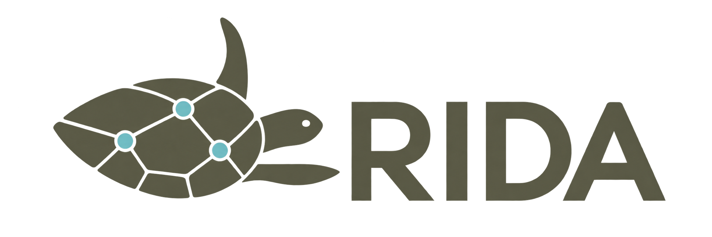

Epidemiological analysis & research
Exploration of infectious-disease research topics and methods, including study questions, epidemiological analysis and careful interpretation.

Runge Infectious Disease AnalyticsResearch & scientific writing collaboration.
RIDA is the professional technical platform of infectious-disease epidemiologist Dr Manuela Runge, bringing together epidemiological research, mathematical modelling, computational analysis and scientific communication for global public health.
Rigorous methods
●Critical inquiry
●Reproducible workflows
●Decision-relevant outputs
01 / Expertise
A technical platform for exploring research questions, developing rigorous analytical work and contributing to scientific collaborations.
Exploration of infectious-disease research topics and methods, including study questions, epidemiological analysis and careful interpretation.
Transmission modelling, scenario analysis, R and Python workflows, model comparison, validation, quality assurance and reproducibility.
Structured review, critical appraisal and synthesis of evidence for infectious-disease research and public-health questions.
Scientific writing, methodological and technical review, peer-review support, and careful responses to reviewer comments.
02 / Approach
“Good analysis is not only technically correct. It questions assumptions, examines the details and makes uncertainty visible.”
RIDA brings together Manuela’s specialist interests and provides a point of contact for epidemiological research ideas, technical questions and potential scientific collaborations.
AI and automation may support research, coding or editorial workflows where they add value. They do not replace domain expertise, methodological scrutiny or accountability: sources, assumptions, code and conclusions remain subject to critical human review and verification.
Enquiries are considered according to their scope and may, where appropriate and with agreement, be referred to or developed with relevant institutional partners. The wider research record—including publications, presentations and project examples—is maintained on Manuela’s professional website.
Explore Manuela’s work03 / Contact
For a conversation about a research idea, technical question or potential collaboration, get in touch directly or visit the full professional profile.